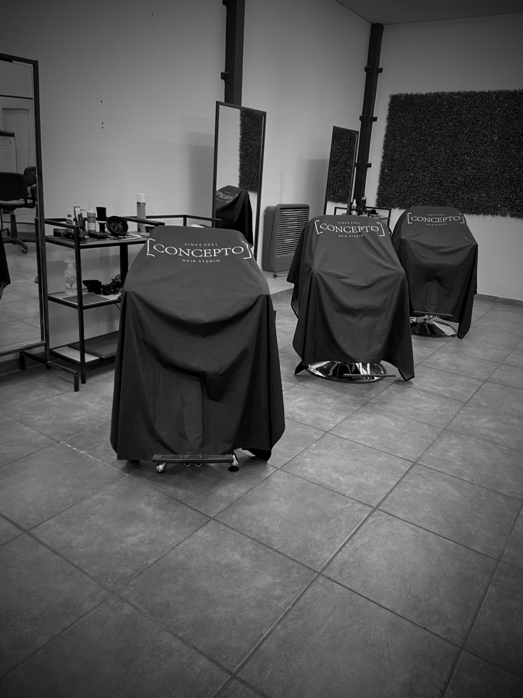

Transforma tu estilo con un elegante corte de pelo largo que realza tu belleza natural. Nuestros expertos estilistas te brindarán un look moderno y sofisticado, adaptado a tus preferencias
Experimenta la frescura y comodidad de un corte de pelo corto que resalta tu personalidad y estilo. Nuestros profesionales te proporcionarán un look dinámico y versátil que se adapta perfectamente a tu vida activa
Transforma tu apariencia con nuestro servicio de corte de pelo y barba. Nuestros estilistas expertos te brindarán un look moderno y cuidado que resalte tus rasgos faciales y tu estilo único. Disfruta de la combinación perfecta entre un corte de cabello a la moda y una barba bien cuidada